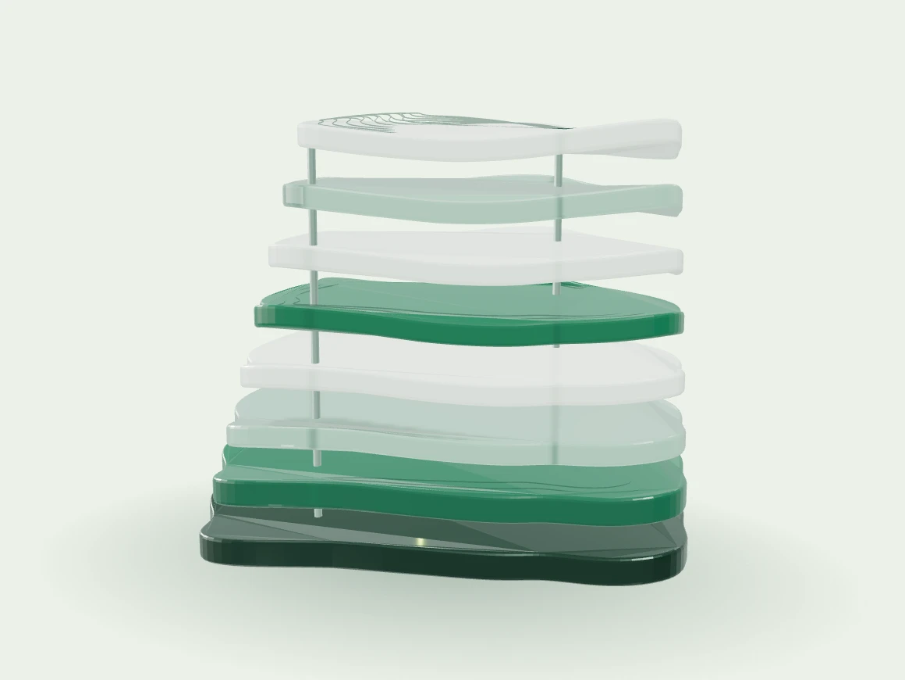
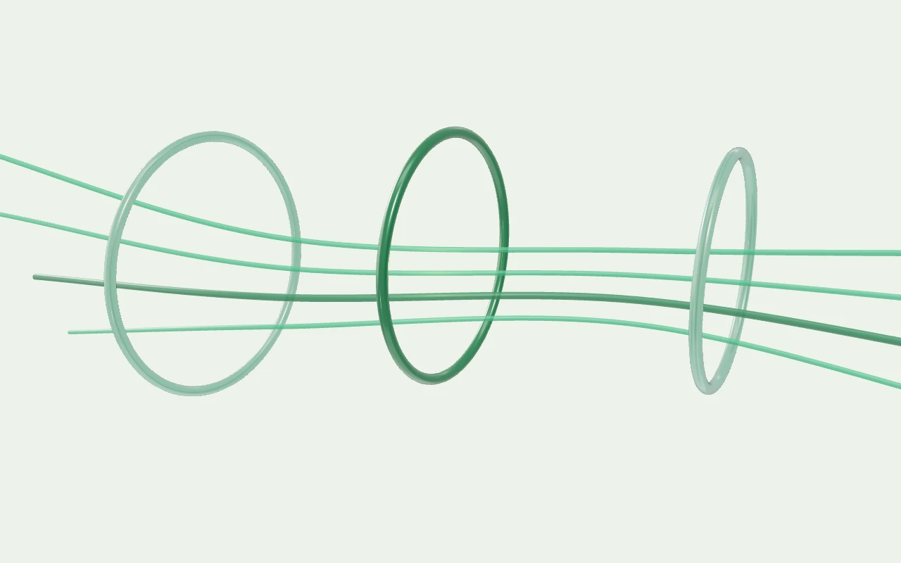
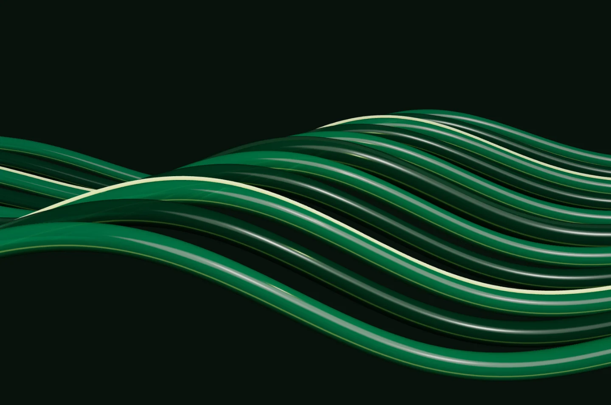

Record the request before it disappears into informal channels.
KIRION / Creative Forge / Experiment R1
Motion with purpose.
Ten studies, seven existing pages, one graphic language. Living Topography stays the identity. Motion serves the work, the sequence, and the reader.
EXPERIMENTAL ONLY — Existing imagery and official Kirjane identity preserved. No production changes approved.

Depth without noise.
Home. Three existing visual planes cross at different speeds. No added canvas, and no new hero asset.
 Make room for what matters.
Make room for what matters.
Hold the question.
Services / Process. A heading stays briefly anchored while the explanation advances. Native flow on touch and compact screens.
Where does the work break?
01 / ObserveMap the real handoff.
02 / StructureDefine a shared state and a responsible actor.
03 / VerifyTest actual interruptions, roles and exceptions.
See the system inside.
Salryn. Controlled perspective reveals architectural layering, not a generic zooming product card.

Read in sequence.
About. Each editorial line becomes visible in its natural reading order. The semantic text is always present.
Before the interface,
understand the work.
Before the spectacle,
make it useful.
One short interlude.
Home chapter transition. Horizontal editorial emphasis is decorative, never navigation or essential instructions.
An exhibition, not a grid.
Projects. A bounded arc of authored concept imagery. Buttons and keyboard controls preserve deliberate inspection.




One kernel, many systems.
Salryn. Fixed-object spatial behavior using the existing approved plate. A new R3F canvas remains unapproved pending GPU comparison.

Architectural visualization / not a live backendCommerce, inventory and financial operations share a governed foundation. Security is mandatory.
Build the workflow in layers.
Services. Four distinct responsibilities assemble into one reliable operational path. No indefinite card pile.
Make the next responsible role explicit.
Preserve a traceable decision with clear authority.
Close with auditable status, not an ambiguous message.
Inspect one work at a time.
Projects. The source artifact stays central. Explicit button, arrow-key and swipe input; no scroll hijack.

Show the handoff.
Salryn. A transparent conceptual workflow progresses with scroll, while manual controls preserve user authority.

Receive a structured order request.
Confirm stock movement and permissions.
Record settlement in the appropriate ledger.
Preserve an auditable completion state.